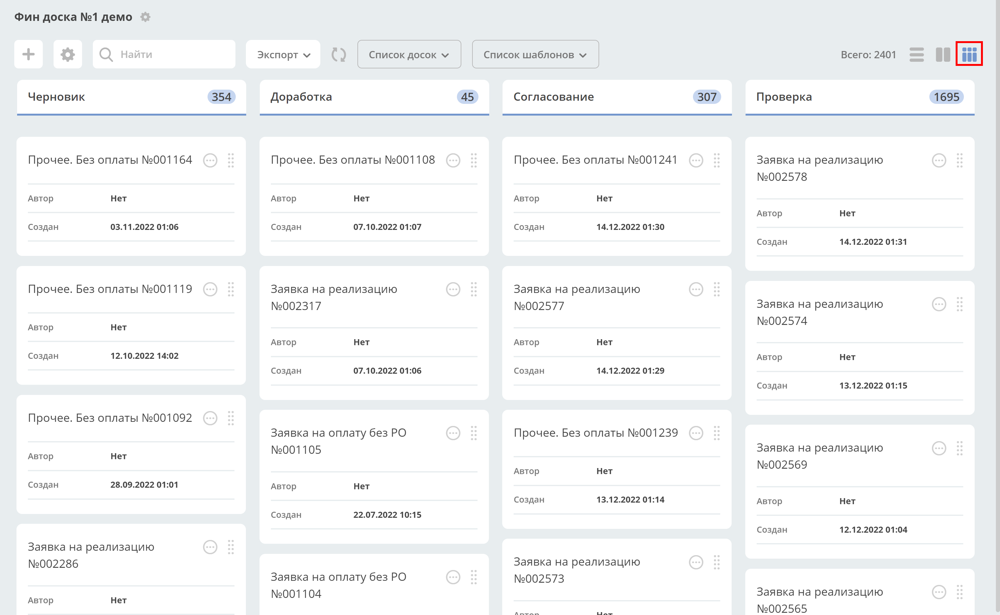
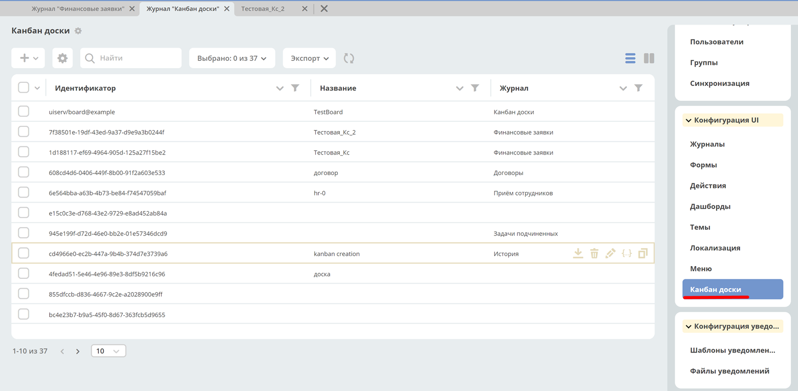

Канбан-доска
Канбан-доска - это представление данных системы выбранного типа данных.
В колонках доски отображаются статусы выбранного типа, а на самой доске - созданные экземпляры этого типа на основе примененного фильтра.
Канбан-доска является дополнительным представлением журнала.
{kind=link}
У журнала может быть несколько сконфигурированных канбан-досок – для их просмотра необходимо нажать Список досок.
Фильтры, примененные в журнале, применяются и на канбан-доске, и наоборот. По нажатию на Список шаблонов доступны шаблоны этого журнала. При открытии доски по умолчанию отображается тот шаблон, который выбран для журнала по умолчанию.
Конфигурация
Журнал с конфигурациями расположен в разделе администратора - > Конфигурация UI - > Канбан доски
{kind=link}
Действия
Возможные действия с доской:
{kind=link}
Просмотреть свойства |
|
Скачать |
|
Удалить |
|
Редактировать свойства доски. Открывается форма аналогичная созданию. |
|
Редактор json. Отрывается редактор, в котором можно вносить изменения:
|
|
Копировать |
{kind=link}
{kind=link}
{kind=link}
{kind=link}
{kind=link}
{kind=link}
{kind=link}
Форма создания
+ → Создать конфигурацию канбан-доски
{kind=link}
Поле |
Описание |
Номер |
|---|---|---|
Идентификатор доски |
Уникальный идентификатор доски. Например, test_board (snake case)
Если идентификатор не заполнять, то он будет сгенерирован автоматически. Например, c8393bfa-5291-464d-88b7-7ae822516e02
|
|
Имя канбан-доски |
Отображаемое имя доски. Отображается в списке канбан-досок, и как title страницы. Укажите вручную.
Может быть пустым.
|
2 |
Возможно ли перемещать сущности между статусами |
Использование drag’n’drop при перемещении между статусами.
Внимание! Перемещение не означает изменение бизнес-процесса.
|
7 |
Тип данных |
Тип сущности, который необходимо отражать на доске. Выбор осуществляется из списка всех уже созданных типов.
Может быть выбрано только 1 значение.
В соответствии с типом в колонках можно выбирать связанные с ним статусы.
|
5 |
Журнал |
Журнал для типа данных.
Для какого журнала создается представление канбан-доска.
Выбор осуществляется из списка всех уже созданных журналов. Может быть выбрано только 1 значение.
|
1 |
Форма |
Форма карточки для отображения сущности.
Выбор осуществляется из списка всех уже созданных типов. Может быть выбрано только 1 значение.
Если форму не выбирать, то на канбан-доске будет отображение сущности по умолчанию со следующими данными:
Автор; Дата создания.
|
4 |
Действия |
UI действия над сущностью на доске. Выбор осуществляется из списка всех уже созданных действий.
Может быть выбрано несколько значений.
|
6 |
Колонки |
Конфигурация колонок |
3 |
Соответствие полей конфигурации и UI:
{kind=link}
Конфигурация колонок
В колонке «Статус» выберите статус из выпадающего списка. Статусы в выпадающем списке указаны в соответствии с выбранным типом данных.
{kind=link}
В колонке «Имя укажите название, которое будет отображаться на канбан-доске. По умолчанию выбранный статус автоматически указывается и в колонке «Имя», можно изменить на необходимое.
{kind=link}
Заполненная конфигурация
{kind=link}
Связь канбан-доски и типа данных
Созданная канбан доска может быть задана и в типе данных:
{kind=link}